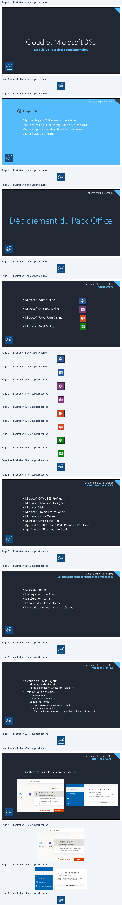
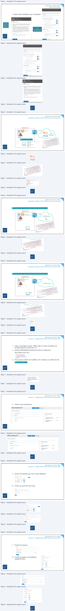
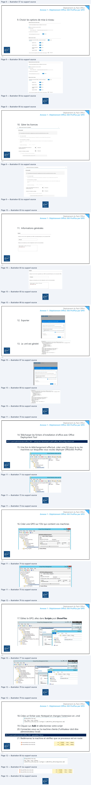
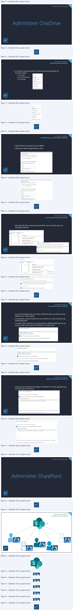
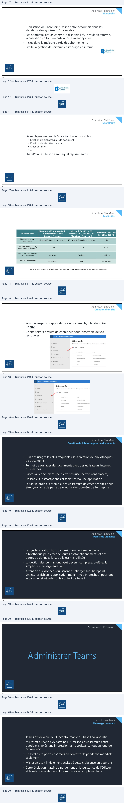
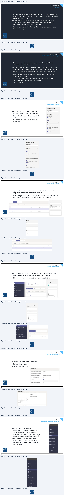

Transcription du document du Drive TSSR. La mise en forme est adaptée au Web ; les compléments IA du portail sont présentés séparément.
Module 04 – Services complémentaires
1
Services complémentaires
Objectifs
• Déployer le pack Office aux postes clients
• Maîtriser les enjeux de configuration sur OneDrive
• Mettre en place des sites SharePoint sécurisés
• Cadrer l’usage de Teams
2
Services complémentaires
3
Déploiement du Pack Office
Office Online
• Microsoft Word Online
• Microsoft OneNote Online
• Microsoft PowerPoint Online
• Microsoft Excel Online
4
N
>
rs
rs
Œ
on
Déploiement du Pack Office
Office 365 client inclus
• Microsoft Office 365 ProPlus
• Microsoft SharePoint Designer
• Microsoft Visio
• Microsoft Project Professionnel
• Microsoft Office Online
• Microsoft Office pour Mac
• Application Office pour iPad, iPhone et iPod touch
• Application Office pour Android
5
Déploiement du Pack Office
Les nouvelles fonctionnalités depuis Office 2016
• Le co-authoring
• L'intégration OneDrive
• L'intégration Teams
• Le support multiplateforme
• La priorisation des mails dans Outlook
6
N
>
Déploiement du Pack Office
Office 365 ProPlus
• Gestion des mises à jour
• Mises à jour de sécurité
• Mises à jour des nouvelles fonctionnalités
• Trois options possibles
• Canal mensuel
• Mise à jour mensuelle
• Canal semi-annuel
• Tous les six mois (en janvier et juillet)
• Canal semi-annuel ciblé
• Tous les six mois (en mars et septembre) à des utilisateurs pilotes
7
Déploiement du Pack Office
Office 365 ProPlus
• Gestion des installations par l’utilisateur
8
SN
Recherche
<
Installer Office
,
A
Mon compte
Ÿ État de l'installation
Applications Office 365
=
Installations
détectées : 0
SharePoint
Teams
Autres options d'installation
ENT
en

Déploiement du Pack Office
Office 365 ProPlus
• Gestion des installations par l’utilisateur
Dans les
options de
chaque
utilisateur
Dans
Paramètres/services
et compléments
9
Déploiement du Pack Office
Installation d’Office 365 ProPlus avec sources locales
Crêpes.local
213.186.33.20
D:\data\O365
CDN
Microsoft
Serveur AD
Serveur DNS
https://config.office.com/
10
J
Paramètres
de téléchargementdes logiciels
Office
désactive
CEE..
Logiciel pour PC et appareils mobiles
administrate
e
a
ile
MD ce
Installations d'Office
fice
»
Entreprise
MBE +
F
TE
deb yann a installé et activé les applications Office sur les appareils
indiqués ici. Vous pouvez désactiver les appareils que deb yann
À qu
vi
-z-vOuS que les utiisateurs
reçoiver
‘utilise plus.
La désactivation d'un appareil ne supprime
pas l'application de
7
.
oe
l'appareil. Si cette personne souhaite continuer à utiliser
@
x
l'application sur un appareil que vous avez désactivé, elle peut
réactiver celui-ci la prochaine
foisqu'elle ouvre l'application,
Logiciel pour Mac
Si vous voulez empêcher les utilisateurs d'installer les applications
Office eux-mêmes, vous pouvez modifier ce paramètre dans
M
el ce
Paramètres
du service
> Applications
ME ws
Microsoft Office
ER)
yannna
pe
re
| an
ent
=<
1 Office
Professional
Pl
Eœc
POST:
w
st
ose uwLAMPE ECS
none
mereut
ve
Lex
XML
entre
serveur
une fier
ow
Sar
figure
e quero
Enr
ou
rate ter
)
ES
afincorer” pus
Linn)
=
veut
Eni
we
Déploiement du Pack Office
Installation d’Office 365 ProPlus avec sources locales
PS D:\data\office_365> .\setup.exe /download \\SM01\office_365\Configuration.xml
Crêpes.local
213.186.33.20
D:\data\O365
D:\data\O365\ODT.exe
CDN Microsoft
Serveur AD
Serveur DNS
11
Déploiement du Pack Office
Installation d’Office 365 ProPlus avec sources locales
PS D:\data\office_365> .\setup.exe /configure \\SM01\office_365\Configuration.xml
Crêpes.local
213.186.33.20
D:\data\O365
CDN Microsoft
Serveur AD
Serveur DNS
12
h
Le
Dorice
=
owinstaltCrpois Sut
Le serveur membrepuls oween ®les
sources depuis Les CDM (aépôts
pavevosor) cur lepara enliant de
\
commande:
Aofice
|
| a.
\
x
End
\
LL
peur abenodesposstoles :
4, Ow exéouttENugnt deconmandt
nse ator
2, owactewplaceunePO quiexboure
pinsealatio
à
Déploiement du Pack Office
Annexe 1 : Déploiement Office 365 ProPlus par GPO
1. Créer un partage nommé : Office_365 sur votre contrôleur de
domaine (pas à la racine de C:\).
2. Extraire officedeploymenttool.exe dans ce répertoire.
Vous devez avoir ceci
3. Vous pouvez utiliser les modèles .xml ci-dessus ou utiliser le site :
https://config.office.com/
13
Déploiement du Pack Office
Annexe 1 : Déploiement Office 365 ProPlus par GPO
4. Choisir votre architecture
14
1D setup.exe
eni
Office Customization Tool
Paramètres de déploiement
eni
Déploiement du Pack Office
Annexe 1 : Déploiement Office 365 ProPlus par GPO
5. Choisir les logiciels que vous voulez déployer
6. Choisir le canal de mise à jour
15
Déploiement du Pack Office
Annexe 1 : Déploiement Office 365 ProPlus par GPO
7. Choisir les langues
8. Choisir les options d’installation
supplémentaire
16
=
——
TE
—
ES
Es
:
=
=
EE

Déploiement du Pack Office
Annexe 1 : Déploiement Office 365 ProPlus par GPO
9. Choisir les options de mise à niveau
17
Déploiement du Pack Office
Annexe 1 : Déploiement Office 365 ProPlus par GPO
10. Gérer les licences
18
Cu
produ
contrat de licence ©
eni
Déploiement du Pack Office
Annexe 1 : Déploiement Office 365 ProPlus par GPO
11. Informations générales
19
Déploiement du Pack Office
Annexe 1 : Déploiement Office 365 ProPlus par GPO
12. Exporter
13. Le .xml est généré
20
SRATREGLE- RUB
env
“InfoDescription="diplotenent office 265 pour bisAjens-scole.ovh" />
a)
‘GronerMP
on era Vale
TR >
env
et ANT D
Déploiement du Pack Office
Annexe 1 : Déploiement Office 365 ProPlus par GPO
14. Télécharger les fichiers d'installation d'office avec Office
Deployment Tool
PS C:\users\administrator\office_365> .\setup.exe /download \\cd01\office_365\Configuration.xml
15. Une fois le téléchargement effectué, créer une OU pour la ou les
machines sur lesquelles vous voulez déployer Office365 ProPlus
21
Déploiement du Pack Office
Annexe 1 : Déploiement Office 365 ProPlus par GPO
16. Créer une GPO sur l'OU qui contient vos machines
22
=
Active Directory Users and Con
File
Action
View
Help
es
alm]
dO)
XG ea|\bm|
Searae
1] Active Directory Users and Computers [WIN-Î| Name
Type
> ( Saved Queries
A CLIENTI
Computer
à Bi eni-ecolelcl
à
Bd
chezouam
ene
D GB lesgroupes
de gens
4 [ lesmachines
——
3] deploiement office
Fr
Group Policy Management
L=1° D
Lx
File
Action
View
Window
Help
-ls
+
25] Xs|HE
| Group Policy Management
GPOOffice365deploiement
Ah Forest en-ecolele
Scope [Detais | Settings | Delegation
4
[Sh
Domains
à GB eni-ecolelel
Links
di
Default Domain Policy
Display
links in this location:
eni-ecole Jol
v
4
Bi _chezouam
‘The following sites, domains, and OUs are linked to this GPO:
> El legroupes de gens
Location
Enforced
Unk Enabled
Pa
à
El deploiement_office
L
a
5
x] GPOOffice365deploiement
b
[lll Domain Controllers
Security Filtering SO
ene
Déploiement du Pack Office
Annexe 1 : Déploiement Office 365 ProPlus par GPO
17. Éditez la GPO, allez dans Scripts puis ShowFiles
23
Déploiement du Pack Office
Annexe 1 : Déploiement Office 365 ProPlus par GPO
18. Créez un fichier avec Notepad et changez l'extension en .cmd
19. Cliquez sur Add et sélectionnez votre script
20. Connectez-vous sur la machine cliente (l'utilisateur doit être
administrateur local)
PS C:\users\administrator\office_365> gpupdate /force
21. Redémarrez la machine et vérifiez que ce processus est en route
24
nl
Group Policy Management Editor
=-|o|
x
DZ
TEED
File
Action
View
Help
[= [=| x
>| alr] Ois| BE
ray
!
7
7
[=]
x
g nn D usoumona.eN MERE Enter
rate
Con
pu
lime
(le)
4 D
Policies
=
>
ΠSoftware Settings
lene)
Startup
Display
Propertie
4 D Windows Settings
Spray Prope
i
> [El Name Resolution
Policy
Descri
ome
Share
Mew
LE Scripts (Startup/Shutdown)
Contair
9
[03 « Machine » Scripts » Startup
> [i Security Settings
Scripts |PowerShellScr
a
> gli) Policy-based Qos
vie Favorites
Nome
>
(2) Administrative Templates: Policy definitiol
=
san
self
I Desktop
Moose
> (
Preferences
4 1 User Configuration
M Downloads
olicies
SH]
Recent places
eee
Nome
> D
Preferences
Reà
M This PC
en
31 Deploy0365.be- Bloc-notes
Fichier
Edition
Format
Affichage
7
\\cd01\0FFice_365\setup.exe /configure \\cd@1\0Ffice_365\Configuration.xm]|
1) Microsoft Office Click-to-Run (SxS)
0%
31,2Mo
OMo/s
OMbits/s
1D Microsoft
Office Click-to-Run (SxS)
0%
43Mo
OMofs
OMbits/s
en

Services complémentaires
25
Administrer OneDrive
L’administration OneDrive
• Le centre d'administration OneDrive permet de gérer les
fonctionnalités :
• De partage
• De synchronisation
• De stockage
26
Accueil
Partage
Synchronisation
Conformité
Notifications
Administrer OneDrive
L’administration des partages OneDrive
• Administrez le type de lien par défaut
• Vérifiez les droits applicables au lien
27
Administrer OneDrive
Les partages externes OneDrive
• Une sécurité plus importante peut être mise en place pour les
partages externes
28
Type
de lien par defaut
eni
Dossiers
Partage externe
EsharePoint
@oneDrive
Tout le monde
[] Les utilisateurs externes doivent accepter les invitations à l'aide des comptes auxquels elles ont été envoyées
Autoriser les utilisateurs externes à partager des éléments
qui ne leur appartiennent pas
Administrer OneDrive
La synchronisation OneDrive
• La synchronisation de vos clients OneDrive peut occasionner des
latences sur votre réseau
• La première synchronisation de vos clients est consommatrice de
bande passante
• Le client utilise ensuite la synchronisation différentielle afin de ne
synchroniser que la partie modifiée d'un document
29
Administrer OneDrive
Gestion des appareils OneDrive
• Vous pouvez spécifier des plages d'adresse IP ou des appareils qui
auront accès à OneDrive
30
Synchronisation
Utilisez ces paramètres pour contrôler la synchronisation des fichiers dans OneDrive et SharePoint.
élécharger
le client
de synchronisatior
soudre
les
problèmes
de synchronisation
Afficher le bouton Synchroniser sur le site web OneDrive
eni
[EJ Autoriser la synchronisation uniquement sur des PC joints à des domaines spécifiques
_
[] Bloquer la synchronisation de types de fichiers spécifiques
Accès via un appareil
Contrôler l'accès sur
la base de
l'emplacement réseau
È
Autoriser l'accès uniquement à partir d'emplacements d'adresse IP spécifiques
Entrez une adresse IP par ligne
Vérifiez
qu'aucune adresse
IP ne se chevauche,
par exemple,
172.160.0.,
192,168.1.0/16 ou 2001:4798:8028:8:290,
Pour
éviter
d'être bloqué.
vérifiez votre adresse IP actuelle
avant de procéder à
l'enregistrement
;
Contrôler l'accès à partir des applications qui
ne peuvent pas appliquer les restrictions basées sur les appareils
ene
=,
[]
Autoriser l'accès à partir d'applications qui n'utilisent pas l'authentification moderne
Services complémentaires
31
Administrer SharePoint
OneDrive vs SharePoint
1 To
32
sy
a
“Ss,
7
a
*
Us
a
“
;
\
7.
ae
4
.
\
aa
/
1
+
'
DL
ac
i
\.
mS
/
.
\,
à OneDrive
2
.
,
rN i
Ni
à OneDrive
Be"
/
)
cs
:
eet
Mls OneDrive
rc i
|
CH
OneDrive
ene
| dd
|
|
e
sn
CL,
=

Administrer SharePoint
SharePoint
• L’utilisation de SharePoint Online entre désormais dans les
standards des systèmes d’information
• Ses nombreux atouts comme la disponibilité, le multiplateforme,
la coédition en font un outil à forte valeur ajoutée
• Inclus dans la majeure partie des abonnements
• Limite la gestion de serveurs et stockage en interne
33
Administrer SharePoint
SharePoint
• De multiples usages de SharePoint sont possibles :
• Création de bibliothèques de document
• Création de sites Web internes
• Créer des listes
• …
• SharePoint est le socle sur lequel repose Teams
34
Dix"
Online
Gin
eni
Administrer SharePoint
Les limites
Microsoft 365 Business Basic,
Microsoft 365 F1 ou
Fonctionnalité
Business Standard ou
Microsoft 365 E3 ou E5,
Office 365 E1, E3 ou E5, ou
F3, Office 365 F3
Business Premium
SharePoint Plan 1 ou 2
Stockage total par
organisation
1 To plus 10 Go par licence achetée
3
1 To plus 10 Go par licence achetée
1 To
4
25 To
25 To
25 To
Stockage maximum par
site (collection de sites)
Sites (collections de sites)
par organisation
2 millions
2 millions
2 millions
Nombre d'utilisateurs
Jusqu'à 300
1 - 500 000
1 - 500 000
Source : https://docs.microsoft.com/fr-fr/office365/servicedescriptions/sharepoint-online-service-description/sharepoint-online-limits
35
Administrer SharePoint
Création d’un site
• Pour héberger vos applications ou documents, il faudra créer
un site
• Ce site servira ensuite de conteneur pour l’ensemble de vos
ressources
36
End
HE
Centre d'administration SharePoint
:
Sites actifs
Accueil
Utilisez cette page pour trier et filtrer les sites et gérer les paramètres di
15 sis
Ë
Créer
Exporter
3 Stratégies
a
Nom du site
?
URL
@
Paramètres
|
Services
de contenu
Y
Communication site
htipsy/testeniecole sharepoint.¢
(nL
Plus de fonetionnalités
Test
sitesrest
| Fonctionnalité | Microsoft365BusinessBasic , BusinessStandardou BusinessPremium | Microsoft365E3ouE5 , Office365E1 E3ouE5 ou , , SharePointPlan1ou2 | Microsoft365F1ou F3 Office365F3 , |
| Stockagetotalpar organisation | 1Toplus10Goparlicenceachetée3 | 1Toplus10Goparlicenceachetée | 1To |
| Stockagemaximumpar site(collec tiondesit es)4 | 25To | 25To | 25To |
| Sites(collectionsdesites) parorganisation | 2millions | 2millions | 2millions |
| Nombred'utilisateurs | Jusqu'à300 | 1 - 500 000 | 1 - 500 000 |
Administrer SharePoint
Création de bibliothèques de documents
• L’un des usages les plus fréquents est la création de bibliothèques
de documents
• Permet de partager des documents avec des utilisateurs internes
ou externes
• L’accès aux documents peut être sécurisé (permissions d’accès)
• Utilisable sur smartphones et tablettes via une application
• Laisser le droit à l’ensemble des utilisateurs de créer des sites peut
être synonyme de perte de maîtrise des données de l’entreprise
37
Administrer SharePoint
Points de vigilance
• La synchronisation hors connexion sur l’ensemble d’une
bibliothèque peut créer de lourds dysfonctionnements et des
pertes de données lorsqu’elle est mal utilisée
• La gestion des permissions peut devenir complexe, préférez la
simplicité et la segmentation
• Attention aux données qui seront à héberger sur Sharepoint
Online, les fichiers d’application métier (type Photoshop) pourront
avoir un effet néfaste sur le confort de travail
38
N
>
Services complémentaires
39
Administrer Teams
Un usage croissant
• Teams est devenu l’outil incontournable du travail collaboratif
• Microsoft a révélé avoir atteint 115 millions d’utilisateurs actifs
quotidiens après une impressionnante croissance tout au long de
l’année 2020
• Ce total a été porté en 2 mois en contexte de pandémie mondiale
seulement
• Microsoft avait initialement envisagé cette croissance en deux ans
• Cette évolution massive a pu démontrer la puissance de l’éditeur
et la robustesse de ses solutions, un atout supplémentaire
40
N
>

Administrer Teams
Gestion
• Les fonctionnalités phares comme les équipes et la possibilité de
créer des réunions en quelques clics en font un outil puissant mais
également dangereux
• À l’image de la création de sites SharePoint, la multiplication
d’équipes et une éventuelle ouverture publique de celles-ci
peuvent engendrer des fuites de données
• Un panneau d’administration est disponible et va permettre de
limiter ces usages
41
Administrer Teams
Limiter la création des équipes
• Conserver la maîtrise de l’environnement Microsoft 365 est
essentiel pour une entreprise
• Bon nombre d’administrateurs se rendent compte trop tard que
des débordements ont eu lieu et il est difficile de revenir en arrière
• Former un groupe restreint d’utilisateurs et les responsabiliser
• Il est possible de limiter la création de groupes M365 et donc
d’équipes en 3 étapes :
1.
Création d’un groupe qui sera autorisé à créer des groupes M365
2.
Application d’un script fourni par Microsoft
3.
Vérification
42
N
>
Administrer Teams
Gestion des équipes
• Vous avez la main sur les différentes
équipes créées au sein de votre tenant
• Paramétrez le niveau de confidentialité
de l’équipe et les différents usages et
fonctionnalités disponibles pour les
membres
43
Administrer Teams
Gestion des équipes
• Ajoutez des canaux et maîtrisez les membres pour segmenter
l’équipe et les accès aux différents canaux
• Paramétrez le niveau de confidentialité de l’équipe et les différents
usages et fonctionnalités disponibles pour les membres
44
Modifier l'équipe
Confidentialité
Public
Conversations
Les membres de l'équipe peuvent modifier les
messages envoyés
Ori
Les membres de l'équipe peuvent supprimer
les messages envoyés
@ rive
Canaux
Ajout de nouveaux canaux et modification des
canaux existants
l'en
Ajouter, modifier ou supprimer des onglets
l'ex
Ajouter, modifier ou supprimer des
connecteurs
ler
>ene
Aiouter. modifier ou supprimer des
Ajouter
Canal de test
Description
Y
Général
Standard
Désactivé
Type
5
Ca
Standard
Désactivé
Standard
ene
Privé
Standard
Administrer Teams
Gestion des réunions
• Pour cadrer l’usage de la fonctionnalité dans les réunions Teams,
il est possible et recommandé de définir des stratégies
• Elles seront ensuite affectées à un groupe d’utilisateurs
45
Administrer Teams
Gestion des réunions
• Gestion des paramètres audio/vidéo
• Partage de contenu
• Gestion des participants
46
Attribuer une stratégie à
un groupe
&_
Réunions
v
à
n
ER
Applications Teams
Sélectionner
un classement
=
1
Ail
Analyse et rapports
not
en
=
f
2
Planification
0
Non
RestrictedAnonymoushccess
Participants et invités
“
Administrer Teams
Paramétrage de l’organisation
• Les paramètres à l’échelle de
l’organisation vous permettront de
définir les fonctionnalités activées lors
des appels, réunions ou utilisation de la
messagerie pour les utilisateurs invités
• Vous pourrez également maîtriser
l’utilisation d’applications tierces de
partage de fichiers comme Dropbox ou
Google Drive
47
HE
Centre d'administrationMi
Tableau de
bord
#88
Équipe
@
Emplacement
ene
